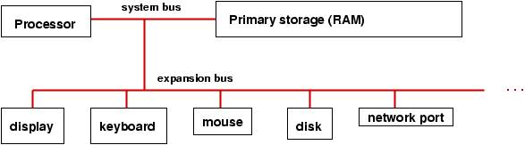
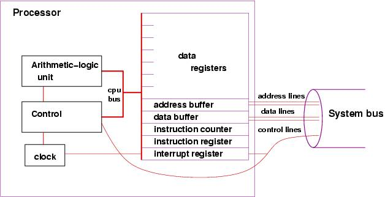
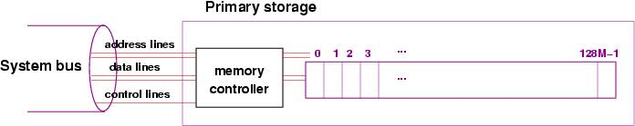
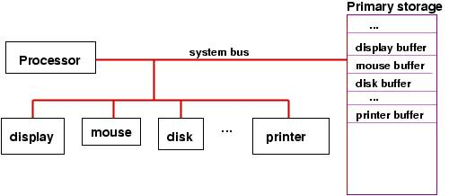
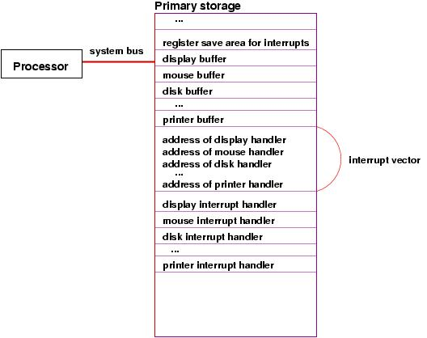
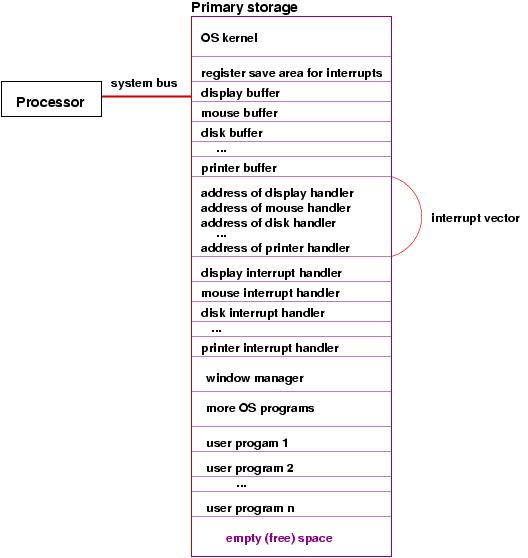

For reasons of speed, primary storage is connected ``more closely'' to the processor than are the input/output devices. Most of the devices (e.g., internal disk, printer) are themselves primitive computers in the sense that they contain simple processors that help transfer information to/from the processor to/from the device.
Here is a simple picture that summarizes the above:

It is premature to study precisely how numbers and symbols can be represented as off-on (0-1) pulses, but here is review of base-2 (binary) coding of numbers, which is the concept upon which computer information is based:
number binary coding
0 0000
1 0001
2 0010
3 0011
4 0100
5 0101
6 0110
7 0111
8 1000
...
14 1110
15 1111
and so on. It is possible to do arithmetic in base two, e.g.
3+5 is written:
0011 +0101 ----- 1000The addition works like normal (base-10) arithmetic, where 1 + 1 = 10 (0 with a carry of 1). Subtraction, multiplication, etc., work this way, too, and it is possible to wire an electrical circuit that mechancially does the addition of the 0s and 1s. Indeed, a processor uses such a wiring, which operates on binary numbers held in registers, where a register is a sequence of bits (electronic ``flip-flops'' each of which can remember a 0 or 1). Here is a picture of an 8-bit register that holds the number 9:
+--+--+--+--+--+--+--+--+ | 0| 0| 0| 0| 1| 0| 0| 1| +--+--+--+--+--+--+--+--+
A processor has multiple such registers, and it can compute 3+5 by placing 3 (0000 0011) and 5 (0000 0101) into two registers and then using the wiring between the registers to compute the sum, which might be saved in a third register. A typical, modern register has 32 bits, called a fullword. Such a register can store a value in the approximate range of -2 billion to +2 billion.
When an answer, like 3+5 = 8, is computed, the processor might copy the answer to primary storage to save it for later use. Later, the processor can copy the number from storage back into a register and do more arithmetic with it.
Here is a simplistic picture of the parts of a processor:

The picture shows that each fullword (cell) is numbered by a unique address (analogous to street addresses for houses), so that information transferred from the processor can be saved at a specific cell's address and can be later retrieved by referring to that same address.
The picture shows an additional component, the memory controller, which is itself a primitive processor that can quickly find addresses and copy information stored in the addresses to/from the system bus. This works faster than if the processor did the work of reaching into storage to extract information.
When a number is copied from the processor into storage, we say it is written; when it is copied from storage into the processor, we say it is read.
As the diagram suggests, the address lines in the system bus are wires that transfer the bits that form the address of the cell in storage that must be read or written (the address is transmitted from the processor's address buffer --- see the previous section); the data lines are wires that transfer the information between the processor's data buffer and the cell in storage; and the control lines transmit whether the operation is a read or write to primary storage.
The tradition is to measure size of storage in bytes, where 8 bits equal one byte, and 4 bytes equal one fullword. The larger the number, the larger the storage.
In the 1950's, John von Neumann realized that primary storage could hold not only numbers, but patterns of bits that represented instructions that could tell the processor (actually, tell the processor's control unit) what to do. A sequence of instructions was called a program, and this was the beginning of stored-program, general purpose computers, where each time a computer was started, it could receive a new program in storage, which told the processor what computations to do.
Here is a simplistic example of a stored program that tells the processor to compute the sum of three numbers held in primary storage at addresses, 64, 65, and 66 and place the result into the cell at address 67:
LOAD (read) the number at storage address 64 into data register 1 LOAD the number at storage address 65 into data register 2 ADD register 1 to register 2 and leave the sum in register 2 LOAD the number at address 66 to register 1 ADD register 1 to register 2 and leave the sum in register 2 STORE (write) the value in register 2 to storage address 67instructions like LOAD, ADD, and STORE can be represented as bit patterns that are copied into the processor's instruction register.
Here is a simple coding of the six-instruction program, which is situated at addresses 1-6 of primary storage (and the numbers are at 64-66). The instructions are coded in bit patterns, and we assume that LOAD is 1001, ADD is 1010, and STORE is 1011. Registers 1 and 2 are 0001 and 0010. Storage addresses 64 -- 67 are of course 0100 0000 to 0100 0011.
The format of each instruction is: IIII RRRR DDDD DDDD, where IIII is the coding that states the operation required, RRRR is the coding of which data register to use, and DDDD DDDD is the data, which is either a storage address or another register number.
PRIMARY STORAGE address: contents ------- -------- 0: ... 1: 1001 0001 0100 0000 2: 1001 0010 0100 0001 3: 1010 0010 0000 0001 4: 1001 0001 0100 0010 5: 1010 0010 0000 0001 6: 1011 0010 0100 0011 7: ... ... 64: 0000 0000 0000 0100 65: 0000 0000 0000 0011 66: 0000 0000 0000 0001 67: ... ...(Note: I have shortened the instructions to 16 bits, rather than use 32, because I got tired typing lots of zeros!)
The example is a contrived, but it should convince you that it is indeed possible to write instructions in terms of binary codings that a control unit can decode, disassemble, and execute.
It is painful for humans to read and write such codings, which are called machine language, and there are abbreviations, called assembly language, that use text forms. Here is a sample assembly-language version of the addition program:
LOAD R1 64 LOAD R2 65 ADD R2 R1 LOAD R1 66 ADD R2 R1 STORE R2 67
Here is a small example. Say that the clock has ``ticked'' (pulsed), and the instruction register holds 3. Say that address 3 in primary storage holds the coding of the instruction, ADD R2 R1. The instruction cycle might go like this:
When the instruction arrives, copy it from the data buffer into the instruction register.
Increment the instruction counter to 4 (that is, 0000 0100).
The forms of instruction that the processor can execute are called the instruction set.
There are these forms of instructions found in an instruction set:
Even small examples are painful to write in assembly language, and people quickly developed simpler notations that could be mechanically converted to assembly (which could itself be mechanically converted into base-2 codings).
FORTRAN (formula translator language) is a famous example, developed in the 1950's by John Backus. When a human writes a program using FORTRAN, she writes a set of mathematical equations that the computer executes. Instead of using specific numerical storage addresses, names from algebra (``variable names''), like x and y, can be used instead.
Here is an example, coded in FORTRAN, that places a value in a storage cell, named x, and then divides it by 2, saving the result again in the same cell:
x = 3.14159 x = x / 2And here is an example that divides x by y, saving the answer in x's cell, provided that y has a non-zero value:
if ( y .NEQ. 0 ) x = x / y(read this as ``if y not-equal-to 0, then compute x = x / y'')
With some work, one can write a program that mechanically translates FORTRAN programs into (long) sequences of machine code; such a program is called a compiler. There is another ``translation program,'' called an interpreter, which does not convert a program to machine code, but instead reads a program one line at a time and tells the processor to execute ``pre-fabricated'' sequences of instructions that match the program's lines. These concepts are developed in another lecture.
Languages like FORTRAN (and COBOL and LISP and C and Java and ...) are called high-level programming languages.
Although it looks and operates differently than primary storage, it is perfectly fine to think of disk storage (and other forms of secondary storage, like a memory key or a CD), as a variant of primary storage, connected to the processor by means of the system bus, using its own controller to help read and write information. The main distinction is that secondary storage is cheaper (to buy) than primary storage, but it is slower to read and write information to and from it.
A typical computer uses disk secondary storage to hold a wide variety of programs that can be copied into primary storage for execution, as requested by the user. Secondary storage is also used to archive data files.
Secondary-storage devices are activated when the processor executes a READ or WRITE instruction. These instructions are not as simple to do as the LOAD and STORE instructions, because the secondary-storage devices are so slow, and the processor should not waste time, doing nothing, waiting for the device to finish its work.
The solution is: The processor makes the request for a read or write and then proceeds to do other work.
Consider how a processor might execute a WRITE instruction to the disk; here is how the instruction cycle might go:
Each secondary-storage device has its own ``buffers'' reserved for it in primary storage --- this is simpler than wiring the processor for buffers for each possible storage device.
An important ``secondary storage'' device (actually, it is an output device!) is the computer's display. A typical display is a huge grid of pixels (colored dots), each of which is defined by a trio of red-green-blue numerical values. The display has a huge buffer in primary storage, where there is one (or more) cell that describes the color of each pixel. A write instruction executed by the processor causes the display's buffer to be altered at the appropriate cells, and the display's controller (called the ``video controller'') reads the information in the buffer and copies its contents to the display, thus repainting the display.
To summarize, here is a picture of a computer with buffers reserved for input/output devices in primary storage:
It is important to see in the picture that (the controllers in) the various storage devices can use the system bus to read/write from primary storage without bothering the processor. So, input and output can proceed at the same time that the processor executes instructions.
When a computer is connected to an outside network, the network can also be considered a kind of secondary-storage device that responds to read and write instructions, but the format of the reads and writes is far more complex --- they must include the address of the destination computer, the kind of data transmitted, the stage of interaction that is being done, etc. So, there are standardized patterns of bits, called protocols, that must be transmitted as ``reads'' and ``writes'' from the processor to the system bus to the port to the network. To accomplish a complete read or write, there might well be multiple transmissions from processor to bus to port to network. The design of protocols is a crucial issue to computer networks.
Here is a second, similar situation: A human presses the mouse's button, demanding attention from the processor (perhaps to start or stop a program or to provide input to the program that the processor is executing). How is the processor signalled about the mouse click?
To handle these situations, all processors are wired for interruption of their normal executions. Such an interruption is called an interrupt.
Recall the standard execution cycle:
The interrupt register is connected to the the system bus, so that when a secondary storage device has completed an action, it signals the control unit by setting to 1 one of the bits in the interrupt register.
Now, we can explain the final step of the execution cycle, the check for interrupts: After the execution step, the control unit examines the contents of the interrupt register, checking to see if any bit in the register is set to 1. If all bits are 0, then no device has completed an action, so the processor can start a new instruction.
But if a bit is set to 1, then there is an interrupt --- the processor must pause its execution and do whatever instructions are needed:
For example, perhaps the user has pressed the mouse button. The device controller for the mouse sends a signal on the system bus to set to 1 the bit for a ``mouse interrupt'' in the interrupt register. When the control unit examines the interrupt register at the end of its current execution cycle, it sees that the bit for the mouse is set to 1. So, it resets the bit to 0 and resets the instruction counter to the address of the program that must be executed whenever the mouse button is pressed. Once the mouse-button program finishes, the processor can resume the work it was doing.
The mouse-button program is called an interrupt handler.
The previous story skipped a lot of details: Where does the processor find the interrupt-handler program for the mouse? What happens to the information resting in the registers if we must pause execution and start a new program, namely, the interrupt handler? What if more than one interrupt bit is set? What if a new interrupt bit gets set while the processor is executing the mouse-button program?
Some of the answers are a bit complex. Based on this picture, we can provide simplistic answers:
Cells in primary storage hold the addresses of the starting instructions for each of the interrupt handlers for the devices. The sequence of addresses is called an interrupt vector. The processor finds the address of the needed interrupt handler from the interrupt vector.
Before the processor starts executing an interrupt handler, it must copy the current values in all its registers to a register-save area in primary storage. When the interrupt handler is finished, the values in the register-save area are copied back into the registers in the processor, so that the processor can resume what it was doing before the interrupt.
The case of multiple interrupts is not covered here, but the basic idea is that an executing interrupt handler can itself be interrupted and its own registers can be saved.
The startup- and manager-program is the operating system. When the computer is first started, the operating system is the program that executes first. As noted, it initializes the computer's storage as well as the controllers for the various devices. The interrupt handlers just discussed as considered parts of the operating system.
In addition, the operating system helps the processor execute multiple programs ``simultaneously'' by executing each program a bit at a time. This technique, which is studied carefully in another lecture, is crucial so that a human user can start and use, say, a web browser and a text editor, at the same time.
The operating system is especially helpful at managing one particular output device --- the computer's display. The operating system includes a program called the window manager, which when executed, paints and repaints as needed the pixels in the display. The window manager must be executing ``all the time,'' even while the human user starts programs like a web browser, text editor, etc.
The operating system lets the window manager repaint the display in stages: when the window-manager program repaints the display, it must execute a sequence of WRITE instructions. When the processor executes one of the WRITE instructions, this triggers the display's controller to paint part of the display. When the display controller finishes painting the part, it sets a bit in the interrupt register so that the interrupt handler for the display can execute and tell the processor to restart the window manager and continue repainting the display. In this way, the window manager is executing ``all the time,'' in starts and stops.
Here is a revised picture of the computer's storage, which shows the inclusion of the operating system (``OS'') and the division of the remaining storage for the multiple user programs that are executing:
The actions of the operating system are developed in a later lecture.